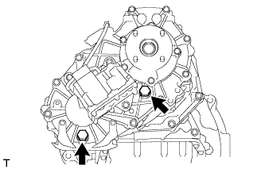
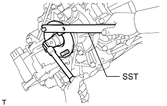
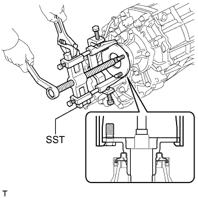
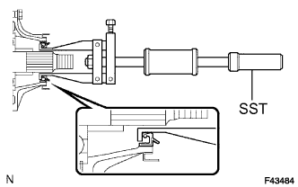
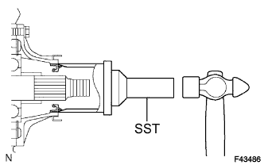
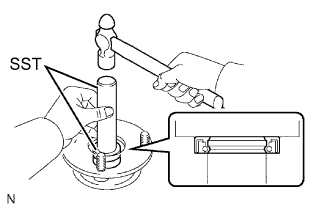
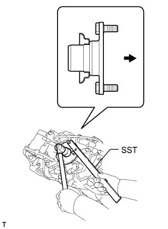
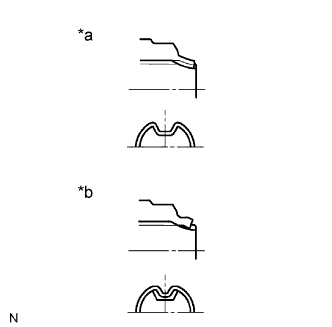

TRANSFER CASE REAR OIL SEAL > REPLACEMENT |
| 1. DRAIN TRANSFER OIL |
|  |
Remove the filler plug and gasket.
Remove the drain plug and gasket, and drain the transfer oil.
Install a new gasket and the drain plug.
| 2. REMOVE REAR PROPELLER SHAFT ASSEMBLY |
Remove the rear propeller shaft (Click here).
| 3. REMOVE REAR OUTPUT SHAFT COMPANION FLANGE SUB-ASSEMBLY |
Using a chisel and hammer, loosen the staked part of the lock nut.
|  |
Using SST to hold the companion flange, remove the lock nut.
|  |
Using SST, remove the companion flange.
| 4. REMOVE REAR TRANSFER OUTPUT SHAFT COMPANION FLANGE OIL SEAL |
Using a screwdriver and hammer, tap out the oil seal from the companion flange.
| 5. REMOVE TRANSFER CASE REAR OIL SEAL |
|  |
Using SST, tap out the oil seal.
| 6. INSTALL TRANSFER CASE REAR OIL SEAL |
|  |
Coat the lip of a new oil seal with MP grease.
Using SST and a hammer, tap in the oil seal until its surface is flush with the case upper surface.
| 7. INSTALL REAR TRANSFER OUTPUT SHAFT COMPANION FLANGE OIL SEAL |
|  |
Using SST and a hammer, tap in a new oil seal.
Coat the lip of the oil seal with MP grease.
| 8. INSTALL REAR OUTPUT SHAFT COMPANION FLANGE SUB-ASSEMBLY |
|  |
Apply gear oil to the connecting areas of the companion flange and output shaft.
Install the companion flange to the output shaft.
 | Rear |
Using SST to hold the companion flange, install a new lock nut.
|  |
Using a chisel and hammer, stake the lock nut.
| *a | CORRECT |
| *b | INCORRECT |
| 9. INSTALL PROPELLER SHAFT ASSEMBLY |
Install the rear propeller shaft (Click here).
| 10. ADD TRANSFER OIL |
Remove the filler plug and gasket.
Add oil so that the oil level is between 0 to 5.0 mm (0 to 0.196 in.) from the bottom lip of the filler plug hole.
Wait approximately 5 minutes and check that the oil level has not changed.
Install a new gasket to the filler plug and then tighten the plug.
| 11. CHECK FOR TRANSFER OIL LEAK |